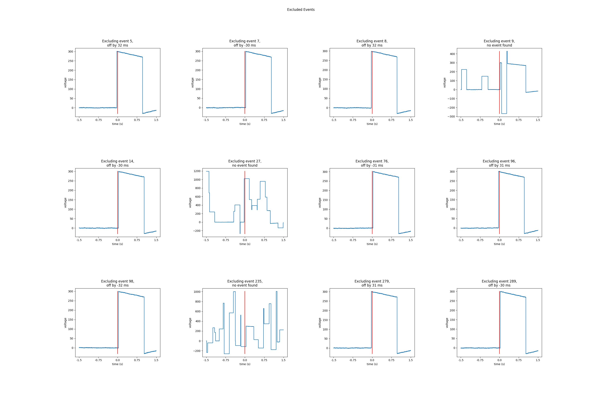
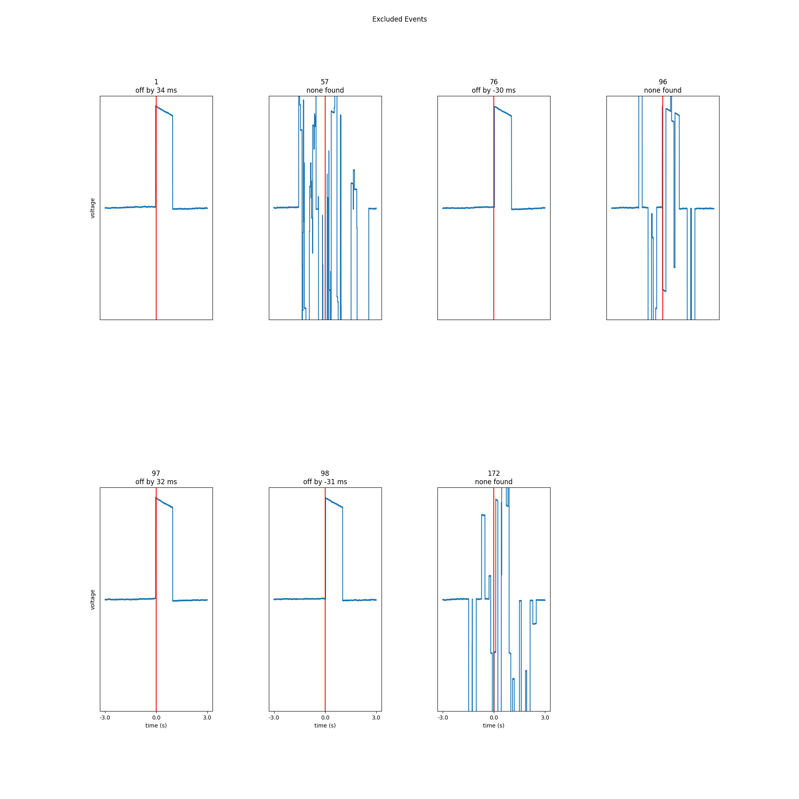

Note
Click here to download the full example code
01. Find Photodiode Events¶
In this example, we use pd-parser to find photodiode events and align them to behavior. Then, save the data to BIDS format.
# Authors: Alex Rockhill <aprockhill@mailbox.org>
#
# License: BSD (3-clause)
Import data and use it to make a raw object:
We’ll make an mne.io.Raw object so that we can save out some random data with a photodiode event channel in it in fif format (a standard electrophysiology format)
import os.path as op
import numpy as np
import mne
from mne.utils import _TempDir
import pd_parser
from pd_parser.parse_pd import _to_tsv
out_dir = _TempDir()
# simulate photodiode data
raw, events = pd_parser.simulate_pd_data(n_events=320)
# make some errent photodiode signals
raw2 = pd_parser.simulate_pd_data(n_events=10, iti=31.,
iti_jitter=15.,
n_sec_on=2.5)[0]
raw._data[0, :raw2._data.size] += raw2._data[0]
# take only the last 300 events to test alignment
events = events[20:]
# make fake electrophysiology data
info = mne.create_info(['ch1', 'ch2', 'ch3'], raw.info['sfreq'],
['seeg'] * 3)
raw3 = mne.io.RawArray(np.random.random((3, raw.times.size)) * 1e-6, info)
raw3.info['lowpass'] = raw.info['lowpass'] # these must match to combine
raw.add_channels([raw3])
# bids needs these data fields
raw.info['dig'] = None
raw.info['line_freq'] = 60
fname = op.join(out_dir, 'sub-1_task-mytask_raw.fif')
raw.save(fname)
# make behavior data
np.random.seed(12)
beh_events = events[:, 0].astype(float) / raw.info['sfreq']
offsets = np.random.random(len(beh_events)) * 0.05 - 0.025
beh_events += offsets
fix_duration = np.repeat(0.7, beh_events.size)
go_time = np.random.random(beh_events.size) + 2
response_time = go_time + np.random.random(beh_events.size) + 1.5
# put in dictionary to be converted to tsv file
beh_df = dict(trial=np.arange(beh_events.size),
fix_onset_time=beh_events, fix_duration=fix_duration,
go_time=go_time, response_time=response_time)
behf = op.join(out_dir, 'sub-1_task-mytask_beh.tsv')
# save behavior file out
_to_tsv(behf, beh_df)
Out:
Creating RawArray with float64 data, n_channels=1, n_times=2178734
Range : 0 ... 2178733 = 0.000 ... 2178.733 secs
Ready.
Creating RawArray with float64 data, n_channels=1, n_times=471792
Range : 0 ... 471791 = 0.000 ... 471.791 secs
Ready.
Creating RawArray with float64 data, n_channels=3, n_times=2178734
Range : 0 ... 2178733 = 0.000 ... 2178.733 secs
Ready.
Writing /private/var/folders/s4/y1vlkn8d70jfw7s8s03m9p540000gn/T/tmp_mne_tempdir_fwqze5ki/sub-1_task-mytask_raw.fif
Closing /private/var/folders/s4/y1vlkn8d70jfw7s8s03m9p540000gn/T/tmp_mne_tempdir_fwqze5ki/sub-1_task-mytask_raw.fif [done]
Use the interactive graphical user interface (GUI) to find parameters:
On the webpage, this is example is not interactive, but if you copy this code into a python console, you can see how to interact with the photo- diode data to pick reasonable parameters by following the instructions.
pd_parser.find_pd_params(fname, pd_ch_names=['pd'])
Out:
Reading in /var/folders/s4/y1vlkn8d70jfw7s8s03m9p540000gn/T/tmp_mne_tempdir_fwqze5ki/sub-1_task-mytask_raw.fif
Opening raw data file /var/folders/s4/y1vlkn8d70jfw7s8s03m9p540000gn/T/tmp_mne_tempdir_fwqze5ki/sub-1_task-mytask_raw.fif...
Isotrak not found
Range : 0 ... 2178733 = 0.000 ... 2178.733 secs
Ready.
Reading 0 ... 2178733 = 0.000 ... 2178.733 secs...
/Users/alexrockhill/projects/pd-parser/pd_parser/parse_pd.py:512: UserWarning: Matplotlib is currently using agg, which is a non-GUI backend, so cannot show the figure.
fig.show()
Find the photodiode events relative to the behavioral timing of interest:
This function will use the default parameters or the parameters you found from pd_parser.find_pd_parameters to find and align the photodiode events, excluding events that were off because the commuter hung up on computation for instance. That data is save in the same folder as the raw file which can be used directly or accessed via pd_parser.pd_parser.pd_parser_save_to_bids.
pd_parser.parse_pd(fname, behf=behf, pd_ch_names=['pd'])
- 
- 
Out:
Reading in /var/folders/s4/y1vlkn8d70jfw7s8s03m9p540000gn/T/tmp_mne_tempdir_fwqze5ki/sub-1_task-mytask_raw.fif
Opening raw data file /var/folders/s4/y1vlkn8d70jfw7s8s03m9p540000gn/T/tmp_mne_tempdir_fwqze5ki/sub-1_task-mytask_raw.fif...
Isotrak not found
Range : 0 ... 2178733 = 0.000 ... 2178.733 secs
Ready.
Reading 0 ... 2178733 = 0.000 ... 2178.733 secs...
Finding photodiode events
0%| | 0/8703 [00:00<?, ?it/s]
9%|9 | 806/8703 [00:00<00:00, 8054.84it/s]
18%|#8 | 1587/8703 [00:00<00:00, 7977.64it/s]
27%|##7 | 2391/8703 [00:00<00:00, 7994.07it/s]
37%|###6 | 3187/8703 [00:00<00:00, 7983.63it/s]
46%|####5 | 4002/8703 [00:00<00:00, 8031.40it/s]
55%|#####5 | 4801/8703 [00:00<00:00, 8017.53it/s]
64%|######4 | 5605/8703 [00:00<00:00, 8022.03it/s]
74%|#######3 | 6415/8703 [00:00<00:00, 8043.41it/s]
83%|########2 | 7209/8703 [00:00<00:00, 8011.14it/s]
92%|#########1| 7996/8703 [00:01<00:00, 7967.10it/s]
100%|##########| 8703/8703 [00:01<00:00, 7991.61it/s]
298 photodiode candidate events found
Checking best behavior-photodiode difference alignments
0%| | 0/267 [00:00<?, ?it/s]
2%|2 | 6/267 [00:00<00:04, 59.74it/s]
5%|4 | 13/267 [00:00<00:04, 61.39it/s]
7%|7 | 19/267 [00:00<00:04, 58.83it/s]
10%|9 | 26/267 [00:00<00:03, 61.38it/s]
12%|#1 | 32/267 [00:00<00:03, 60.07it/s]
14%|#4 | 38/267 [00:00<00:03, 58.35it/s]
16%|#6 | 44/267 [00:00<00:03, 56.10it/s]
19%|#9 | 51/267 [00:00<00:03, 59.06it/s]
21%|##1 | 57/267 [00:00<00:03, 58.57it/s]
24%|##3 | 63/267 [00:01<00:03, 53.48it/s]
26%|##6 | 70/267 [00:01<00:03, 56.05it/s]
28%|##8 | 76/267 [00:01<00:03, 55.62it/s]
31%|### | 82/267 [00:01<00:03, 51.65it/s]
33%|###2 | 88/267 [00:01<00:03, 46.65it/s]
35%|###4 | 93/267 [00:01<00:03, 47.44it/s]
37%|###6 | 98/267 [00:01<00:03, 48.07it/s]
39%|###8 | 104/267 [00:01<00:03, 49.49it/s]
41%|####1 | 110/267 [00:02<00:03, 52.04it/s]
43%|####3 | 116/267 [00:02<00:02, 53.07it/s]
46%|####5 | 122/267 [00:02<00:02, 53.23it/s]
48%|####7 | 128/267 [00:02<00:02, 50.85it/s]
50%|##### | 134/267 [00:02<00:02, 50.09it/s]
52%|#####2 | 140/267 [00:02<00:02, 48.96it/s]
54%|#####4 | 145/267 [00:02<00:02, 48.78it/s]
56%|#####6 | 150/267 [00:02<00:02, 45.25it/s]
58%|#####8 | 156/267 [00:02<00:02, 48.67it/s]
61%|###### | 162/267 [00:03<00:02, 51.19it/s]
63%|######2 | 168/267 [00:03<00:01, 51.43it/s]
65%|######5 | 174/267 [00:03<00:01, 48.18it/s]
67%|######7 | 180/267 [00:03<00:01, 50.66it/s]
70%|######9 | 186/267 [00:03<00:01, 51.07it/s]
72%|#######1 | 192/267 [00:03<00:01, 48.45it/s]
74%|#######4 | 198/267 [00:03<00:01, 50.17it/s]
76%|#######6 | 204/267 [00:03<00:01, 48.39it/s]
79%|#######9 | 211/267 [00:04<00:01, 52.33it/s]
81%|########1 | 217/267 [00:04<00:00, 50.95it/s]
84%|########3 | 224/267 [00:04<00:00, 54.02it/s]
87%|########6 | 231/267 [00:04<00:00, 57.14it/s]
89%|########8 | 237/267 [00:04<00:00, 51.88it/s]
92%|#########1| 245/267 [00:04<00:00, 57.92it/s]
94%|#########4| 252/267 [00:04<00:00, 56.03it/s]
97%|#########7| 259/267 [00:04<00:00, 59.39it/s]
100%|#########9| 266/267 [00:04<00:00, 58.69it/s]
100%|##########| 267/267 [00:04<00:00, 53.61it/s]
Best alignment with the photodiode shifted 159753 samples relative to the first behavior event errors: min -45, q1 -13, med 0, q3 16, max 50
Excluding events that have zero close events or more than one photodiode event within `chunk` time
Excluding event 3, off by 6139 samples
Excluding event 16, off by 6361 samples
Excluding event 17, off by 13553 samples
Excluding event 18, off by 19663 samples
Excluding event 19, off by -18708 samples
Excluding event 20, off by -12573 samples
Excluding event 21, off by -6131 samples
Excluding event 24, off by 7195 samples
/Users/alexrockhill/projects/pd-parser/pd_parser/parse_pd.py:294: UserWarning: Matplotlib is currently using agg, which is a non-GUI backend, so cannot show the figure.
fig.show()
/Users/alexrockhill/projects/pd-parser/pd_parser/parse_pd.py:301: UserWarning: Matplotlib is currently using agg, which is a non-GUI backend, so cannot show the figure.
fig.show()
Add events relative to the photodiode events:
The photodiode is usually sychronized to one event (usually the fixation so that if the deflections caused by the photodiode are large enough to influence other channels through amplifier interactions it doesn’t cause issues with the analysis) so often the events of interest are relative to the photodiode event. In the task a timer can be started at the photodiode event and pulled for time at each of the following events. These events are then passed in tsv file to be added to the events. Note: if more than one photodiode event is used, the parser can be used for each event separately using the keyword add_event=True.
pd_parser.add_pd_relative_events(
fname, behf,
relative_event_cols=['fix_duration', 'go_time', 'response_time'],
relative_event_names=['ISI Onset', 'Go Cue', 'Response'])
Out:
Reading in /var/folders/s4/y1vlkn8d70jfw7s8s03m9p540000gn/T/tmp_mne_tempdir_fwqze5ki/sub-1_task-mytask_raw.fif
Opening raw data file /var/folders/s4/y1vlkn8d70jfw7s8s03m9p540000gn/T/tmp_mne_tempdir_fwqze5ki/sub-1_task-mytask_raw.fif...
Isotrak not found
Range : 0 ... 2178733 = 0.000 ... 2178.733 secs
Ready.
Reading 0 ... 2178733 = 0.000 ... 2178.733 secs...
Save data to BIDS format:
This saves our data to BIDS format so that it’s ready to be analyzed in a reproducible way will all the necessary files. See https://bids.neuroimaging.io/ and https://mne.tools/mne-bids/ for more information about BIDS.
pd_parser.pd_parser_save_to_bids(op.join(out_dir, 'bids_dir'), fname,
sub='1', task='mytask')
Out:
Reading in /var/folders/s4/y1vlkn8d70jfw7s8s03m9p540000gn/T/tmp_mne_tempdir_fwqze5ki/sub-1_task-mytask_raw.fif
Opening raw data file /var/folders/s4/y1vlkn8d70jfw7s8s03m9p540000gn/T/tmp_mne_tempdir_fwqze5ki/sub-1_task-mytask_raw.fif...
Isotrak not found
Range : 0 ... 2178733 = 0.000 ... 2178.733 secs
Ready.
Used Annotations descriptions: ['Fixation', 'Go Cue', 'ISI Onset', 'Response']
/Users/alexrockhill/projects/pd-parser/pd_parser/parse_pd.py:798: RuntimeWarning: The unit for channel(s) pd has changed from V to NA.
raw.set_channel_types({ch: 'stim' for ch in pd_channels
Opening raw data file /var/folders/s4/y1vlkn8d70jfw7s8s03m9p540000gn/T/tmp_mne_tempdir_fwqze5ki/sub-1_task-mytask_raw.fif...
Isotrak not found
Range : 0 ... 2178733 = 0.000 ... 2178.733 secs
Ready.
Creating folder: /var/folders/s4/y1vlkn8d70jfw7s8s03m9p540000gn/T/tmp_mne_tempdir_fwqze5ki/bids_dir/sub-1/ieeg
Writing '/var/folders/s4/y1vlkn8d70jfw7s8s03m9p540000gn/T/tmp_mne_tempdir_fwqze5ki/bids_dir/README'...
References
----------
Appelhoff, S., Sanderson, M., Brooks, T., Vliet, M., Quentin, R., Holdgraf, C., Chaumon, M., Mikulan, E., Tavabi, K., Höchenberger, R., Welke, D., Brunner, C., Rockhill, A., Larson, E., Gramfort, A. and Jas, M. (2019). MNE-BIDS: Organizing electrophysiological data into the BIDS format and facilitating their analysis. Journal of Open Source Software 4: (1896). https://doi.org/10.21105/joss.01896
Holdgraf, C., Appelhoff, S., Bickel, S., Bouchard, K., D'Ambrosio, S., David, O., … Hermes, D. (2019). iEEG-BIDS, extending the Brain Imaging Data Structure specification to human intracranial electrophysiology. Scientific Data, 6, 102. https://doi.org/10.1038/s41597-019-0105-7
Writing '/var/folders/s4/y1vlkn8d70jfw7s8s03m9p540000gn/T/tmp_mne_tempdir_fwqze5ki/bids_dir/participants.tsv'...
participant_id age sex hand
sub-1 n/a n/a n/a
Writing '/var/folders/s4/y1vlkn8d70jfw7s8s03m9p540000gn/T/tmp_mne_tempdir_fwqze5ki/bids_dir/participants.json'...
{
"participant_id": {
"Description": "Unique participant identifier"
},
"age": {
"Description": "Age of the participant at time of testing",
"Units": "years"
},
"sex": {
"Description": "Biological sex of the participant",
"Levels": {
"F": "female",
"M": "male"
}
},
"hand": {
"Description": "Handedness of the participant",
"Levels": {
"R": "right",
"L": "left",
"A": "ambidextrous"
}
}
}
Writing '/var/folders/s4/y1vlkn8d70jfw7s8s03m9p540000gn/T/tmp_mne_tempdir_fwqze5ki/bids_dir/sub-1/ieeg/sub-1_task-mytask_events.tsv'...
onset duration trial_type value sample
159.76 0.0 Fixation 1 159760
160.46 0.0 ISI Onset 3 160460
161.999 0.0 Go Cue 2 161999
163.58 0.0 Response 4 163580
166.238 0.0 Fixation 1 166238
Writing '/var/folders/s4/y1vlkn8d70jfw7s8s03m9p540000gn/T/tmp_mne_tempdir_fwqze5ki/bids_dir/dataset_description.json'...
{
"Name": " ",
"BIDSVersion": "1.4.0",
"DatasetType": "raw",
"Authors": [
"Please cite MNE-BIDS in your publication before removing this (citations in README)"
]
}
Writing '/var/folders/s4/y1vlkn8d70jfw7s8s03m9p540000gn/T/tmp_mne_tempdir_fwqze5ki/bids_dir/sub-1/ieeg/sub-1_task-mytask_ieeg.json'...
{
"TaskName": "mytask",
"Manufacturer": "Elekta",
"PowerLineFrequency": 60.0,
"SamplingFrequency": 1000.0,
"SoftwareFilters": "n/a",
"RecordingDuration": 2178.733,
"RecordingType": "continuous",
"iEEGReference": "n/a",
"ECOGChannelCount": 0,
"SEEGChannelCount": 3,
"EEGChannelCount": 0,
"EOGChannelCount": 0,
"ECGChannelCount": 0,
"EMGChannelCount": 0,
"MiscChannelCount": 0,
"TriggerChannelCount": 1
}
Writing '/var/folders/s4/y1vlkn8d70jfw7s8s03m9p540000gn/T/tmp_mne_tempdir_fwqze5ki/bids_dir/sub-1/ieeg/sub-1_task-mytask_channels.tsv'...
name type units low_cutoff high_cutoff description sampling_frequency status status_description
pd TRIG n/a 0.0 500.0 Trigger 1000.0 good n/a
ch1 SEEG V 0.0 500.0 StereoEEG 1000.0 good n/a
ch2 SEEG V 0.0 500.0 StereoEEG 1000.0 good n/a
ch3 SEEG V 0.0 500.0 StereoEEG 1000.0 good n/a
/Users/alexrockhill/software/mne-bids/mne_bids/write.py:1126: RuntimeWarning: Converting data files to BrainVision format
warn('Converting data files to BrainVision format')
Writing '/var/folders/s4/y1vlkn8d70jfw7s8s03m9p540000gn/T/tmp_mne_tempdir_fwqze5ki/bids_dir/sub-1/sub-1_scans.tsv'...
filename acq_time
ieeg/sub-1_task-mytask_ieeg.vhdr n/a
Wrote /var/folders/s4/y1vlkn8d70jfw7s8s03m9p540000gn/T/tmp_mne_tempdir_fwqze5ki/bids_dir/sub-1/sub-1_scans.tsv entry with ieeg/sub-1_task-mytask_ieeg.vhdr.
Total running time of the script: ( 0 minutes 12.432 seconds)